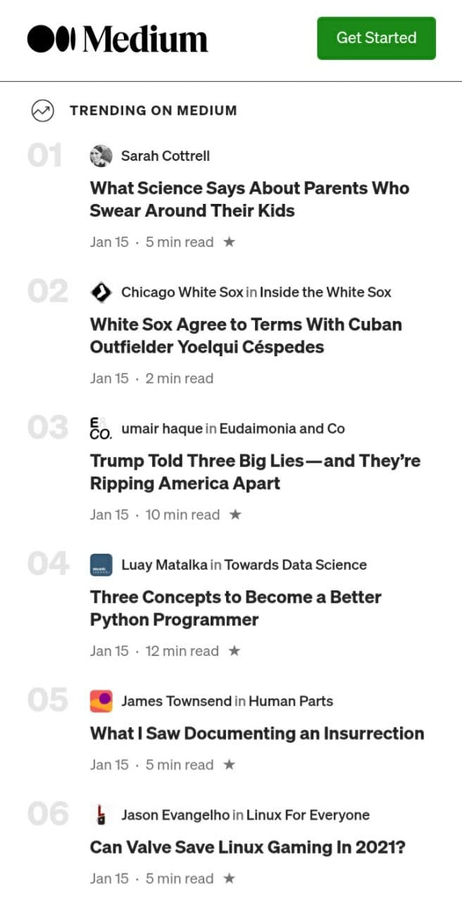

Aligment
Apple
AppleAligment on this website, it something that gives the site this personality, you can see that from the paragraphs and photos, an order is followed, and this is because of the aligmen.
Proximity
Medium
MediumHow the designers use the proximity on this web page, it is pretty interesting. In this frame with have a list of articles, even though some of them are really different from each other, you know the belong to the same website. Also this feature makes the website easy to read.
White Space and Clean Design
Unsplash
UnsplashThe amount of white space in this website makes it look incredible, when I look at it, I do not feel overwhelmed. It's feel like every element on the webpage, either on the mobile version, or the web version uses just the space that it needs.